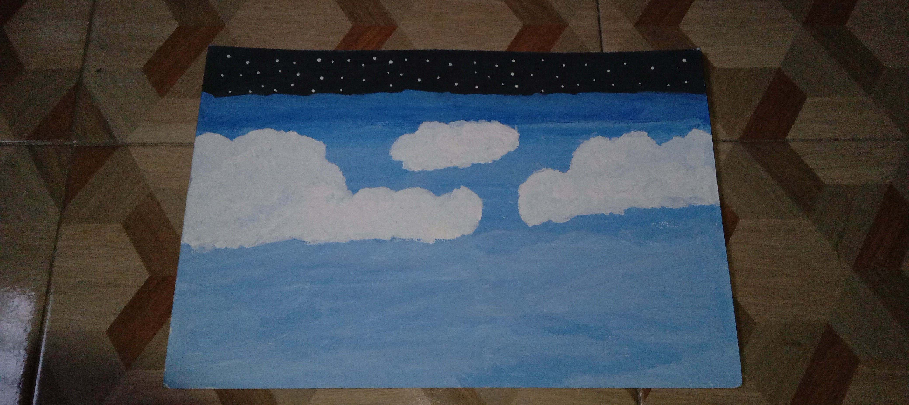
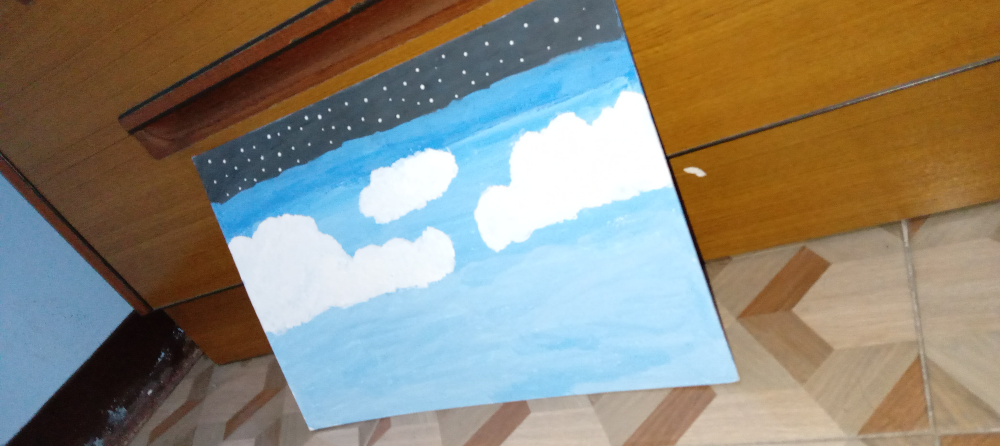
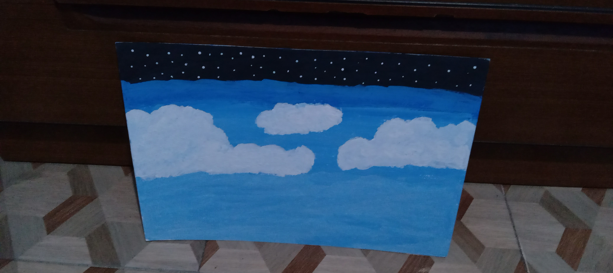
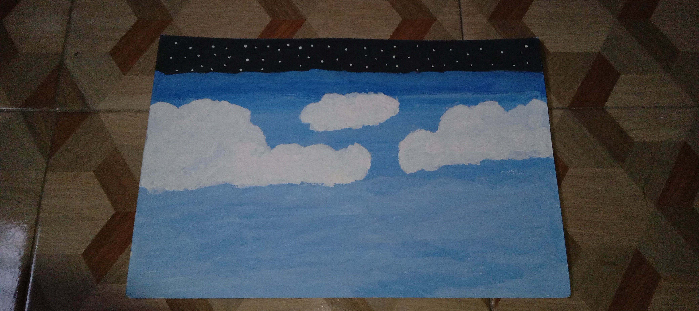
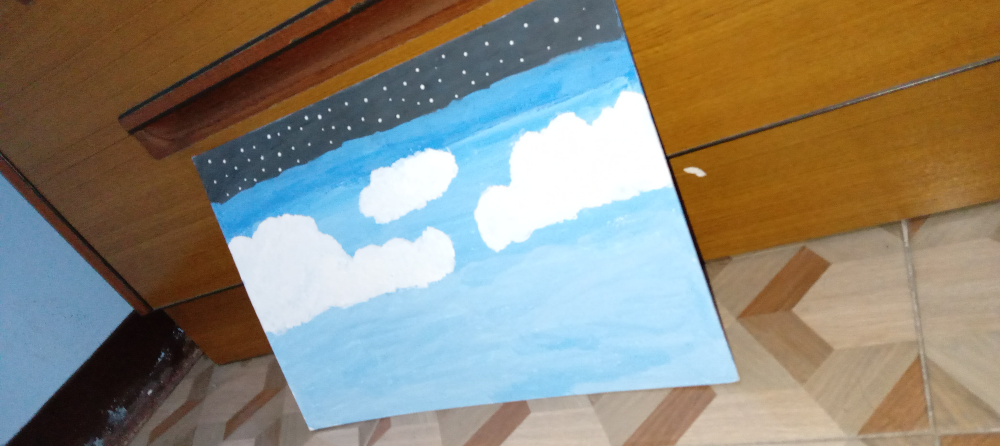
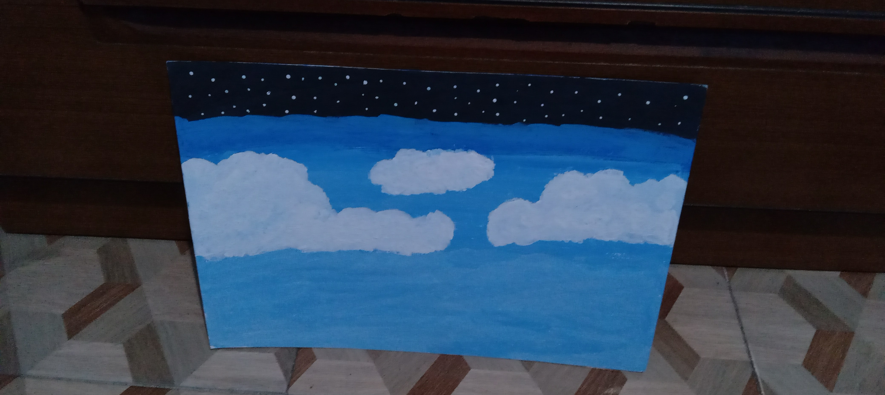

- This artwork was made in poster paint on illustration board, and this artwork is about my happiness and also my sadness because whenever i look at the sky and look at the star in night, there's so many things i realized in life and I'll start another dream that i want to come true and that's make me peacefully and calm. I am very obsessed in the universe and the mystery of this.